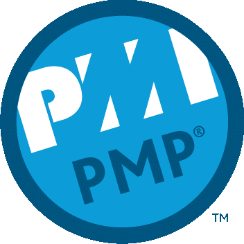
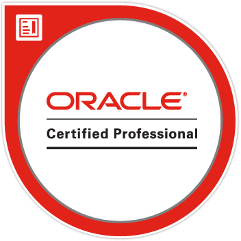
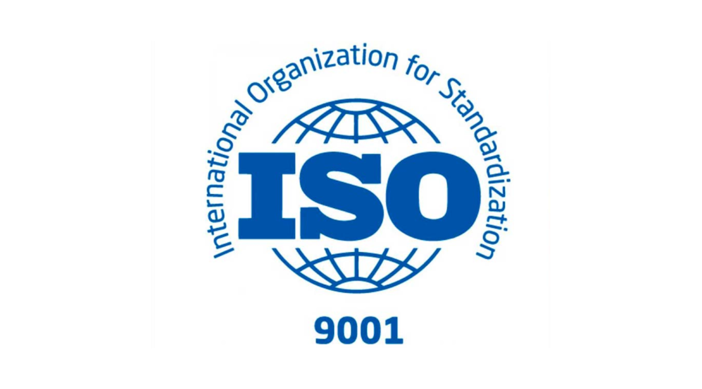
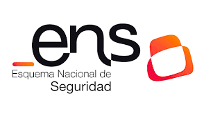

Gestión de servicios de TI
Conocimiento y experiencia en marcos ITIL (v3/v4) para diseñar, operar y mejorar servicios de TI alineados con las necesidades del negocio.
Somos un equipo de profesionales con más de 15 años en el sector IT público y contamos con certificaciones de referencia en gestión de servicios, gestión de proyectos, calidad y tecnologías de bases de datos.
Conocimiento y experiencia en marcos ITIL (v3/v4) para diseñar, operar y mejorar servicios de TI alineados con las necesidades del negocio.

Capacidades de dirección de proyectos bajo el estándar PMP, asegurando planificación, seguimiento y control de riesgos en iniciativas complejas.

Especialización en tecnologías de bases de datos, incluyendo certificaciones orientadas a administración, optimización y alta disponibilidad.
Aplicación de metodologías PRINCE2 para la planificación, control y ejecución de proyectos complejos, especialmente en entornos regulados y Administración Pública.
Experiencia en marcos ágiles para coordinar equipos, priorizar entregables y asegurar una evolución continua de los proyectos con foco en valor y resultados.
Estamos en proceso de certificación en estándares clave que avalan nuestra forma de trabajar y nuestro compromiso con la calidad y la seguridad.

Garantizando que nuestros procesos están definidos, controlados y orientados a ofrecer un servicio consistente, fiable y alineado con las expectativas de nuestros clientes.
Asegurando un compromiso real con el respeto al medio ambiente, integrando prácticas responsables que reducen el impacto ambiental y aportan valor sostenible a nuestros proyectos.

Garantizando que nuestros sistemas y servicios cumplen con los requisitos de seguridad exigidos por la Administración Pública, protegiendo la información y asegurando la continuidad y confianza en los servicios prestados.